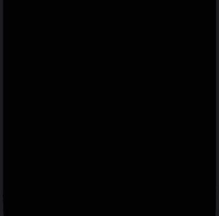

One keyboard,
all your languages. 紡
TsumuKey is an iOS keyboard for people who type in several languages at once. Tsumugi (紡ぎ) is Japanese for weaving thread: it weaves English, French, German, Spanish and Japanese into one keyboard, with no switching. Predictions and corrections run on your phone.

Two languages at once
Pick any two of English, French, German and Spanish. The suggestion bar mixes them as you type; the ones you turned off stay out of the way.
Japanese in the Latin keyboard
Type romaji and a red chip offers the Japanese; tap it to swap. A kana flick pad and a romaji keyboard are there too.
Also
Tap-aware corrections
Each word is scored on where your finger landed plus how likely it is in context.
Learns your words
Undo a correction with backspace and that word is never corrected again.
Your layout
QWERTY, Colemak, AZERTY, QWERTZ and Dvorak; keep up to three in the menu.
Symbols under your finger
Every key carries a symbol; long-press puts it right above, accents next to it.
Emoji search
Search emoji in five languages, with your default skin tone.
On device
The keyboard never goes online. Nothing you type leaves your phone. Privacy
Typing accuracy against Gboard
The same simulated taps typed on Gboard and on TsumuKey (Colemak, iPhone 15, 70 English, French and mixed sentences):
| Typing | Gboard | TsumuKey |
|---|---|---|
| Careful | 85.5% words right | 90.6% |
| Fast | 65.3% | 66.7% |